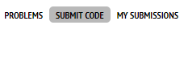

We will start learning programming soon, so we need a development environment for this.
Development environment (IDE) - it’s a program where you can write and launch code. You need this to practice and solve questions for lessons. There are many different IDEs with minuses and pluses for each. We recommend Codeblocks as a first IDE because it uses only 80 Mb but has all the functions needed. In this chapter, we will explain how to launch and download it. If you want to use another program, please find the instruction in the Enthernet.
Other popular IDEs:
Microsoft Visual Studio (Professional IDE for big projects)
https://csacademy.com/workspace (Online IDE. Downward is not needed but you should have internet access constantly)
Dev C++ (Easy but old)
You should open links from the app using a computer. Just click to link to have a copy. After, you can send a copied link to the computer anyhow.
Link for downloading Codeblocks:
Step 1. Follow the link and wait until the program downloaded.
Step 2. Open the downloaded file. Follow this sequence of pressing buttons:
Next -> I Agree -> Next
Step 3. Wait until the installation is over. You will see this phrase after ending:
Do you want to run Codeblocks now? (Вы хотите сейчас запустить Codeblocks?). Press Yes.
Step 4. Press OK in the next two windows.
Step 5. If you doing right, you will see this picture soon:

Step 6. Push Create a new project in the center of a screen to create a new project (space where you will write a code). For solving our tasks you should create console applications in the future. We will explain this later. Press the appropriate button to continue.

Step 7. You will see the greeting window. Press Next to move on.
Step 8. You will be offered to choose a programming language. Select С++ and press Next.
Step 9. Create a project name. Type it in Project title string.
In Folder to create project in space: chose a place for installation. In my case disk C.
Press Next.

Step 10. There are service-based data on the next screen. You can just press Finish without any changes. If you doing right way, you will see your project and folder Source where your code will be placed in the left part of the screen. Open the folder by pressing plus near its name.

Step 11. Press twice to main.cpp file for opening. You will see a program (take it easy, we will explain this program next lesson)
Step 12. Let’s launch it.
For launching the program, we should make two steps
First - compile a program
Second - implement it
Compiling - its a process that converts your program to code for machines. Implementation - its a setting-up process for compiled programs.
Icon Build - yellow cog.
Icon Run - green triangle.
Codeblocks gives a useful opportunity to build and run the program at the same time. You need to press the button with the yellow cob and green triangle for this. (They usually press precisely this button to launch code).

If everything is done correctly, you will see this window:

This program will display the phrase Hello world! to console.
Your IDE is almost ready. Now you can write and run your programs here. Console application - it is a program that reads data from the console, processes them and displays information back to console. The big apps development process is looking like that. You are writing small programs that interact and transmitting information with each other. Console - it is a useful instrument for making communication between computers and users more accessible. You will know about ways of communication between computers soon.
It’s unnecessary to create a new project next time when you opening Codeblocks. You can open the previous project pressing this button.

Step 13. Install one of the new versions of C++. Open tab Settings on the top of Codeblocks panel and press Compiler…
Step 14. Put a tick in third-string Have g++ follow the C++14 ISO C++ language standard and push OK.
Congratulations, you are successfully configured your IDE!
To send your answers to us and be checked, create an account on Сodeforces. There you can find all the tasks from us and the program which will check your code.
For register in Codeforces follow this link:
Create your nickname (Handle), enter e-mail and password and press Register. Confirm your e-mail following the link from the mail which will be in your mailbox. The account is created!
For sending your answers please join to your group. Follow this link and press Join.
You can find a link for task lint at the end of every lesson. There is an opportunity to check the text of tasks, see our explanations and mark tasks as done. Here is a link for questions from this lecture as an example. But don't be hurry and click on it. You should finish reading all the text from this page first. Move to tasks:
We created one task for this lesson but it will be more for others. Use arrows on the top of the panel to move from one lesson to another.
During the task, for this lesson, you should copy and send code which you saw in Codeblocks. For sending the answer for the task open in your computer following the link under the text of the task. Press Submit code.

In the center of the screen you will see a big text box marked as Source code:. Copy code from Codeblocks to this text box. In the future, you will write your own code and also paste there.
Make sure that there is "GNU G++17 7.3.0" Language string.
Press Submit.
You will see a table with your answers. The last one will be on the top. There is one of the following prases in the column:
In queue - wait for a little, your answer will be checked soon.
Running on test - your answer is checking in now.
Wrong answer on test… - your answer is not correct.
Run-time error - your program has mistakes and it was crashed while running.
Compilation error - there are mistakes in your code, it’s impossible to launch the program.
Accepted - good job, your answer is right.
If you see "Accepted", that means that your preparation for the course is over. Don't forget to mark that task in the app as solved.
We hope you will enjoy programming!